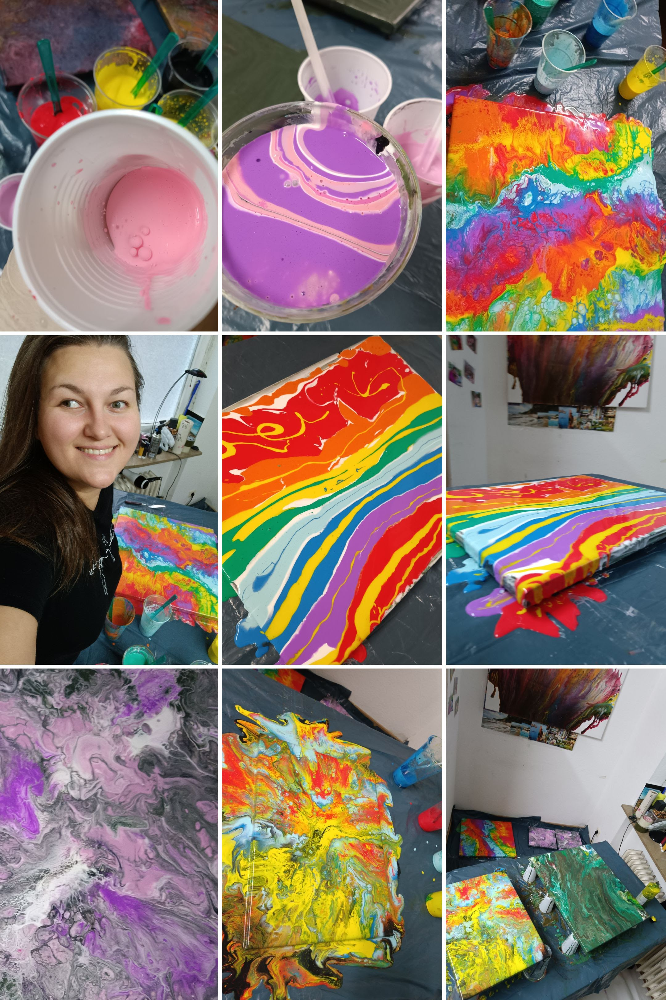

Kunst ist für mich ein stiller Raum voller Farben und Emotionen. Wenn ich male, tauche ich in eine Welt ein, in der Gedanken fließen dürfen und Formen entstehen, die keine Worte brauchen.
Ich arbeite am liebsten mit Acrylfarben – spontan, intuitiv und oft mit den Händen. Natur, innere Stimmungen und das Spiel von Licht und Struktur inspirieren mich. Diese kreative Freiheit bringt Ausgleich zu meiner analytischen Arbeit in der IT.
Hier teile ich einige meiner Werke mit dir. Viel Freude beim Stöbern!
